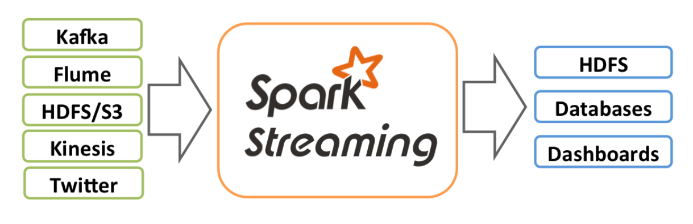

{{page.title}}
Spark Streaming是对spark内核的扩展，用于对实时数据流做大型的、高效能的、可容错的流处理计算。数据可从Kafka、Flume或TCP sockets等导入Spark Streaming，在Spark中执行复杂的运算，然后将处理过的数据输出到文件系统、数据库或实时dashboard中。而且你还可以对数据流使用Spark的机器学习和图处理算法（这在之后的文章中将一一介绍）。

Spark Streaming的工作方式如下：首先接收输入的数据流，然后将数据流按一定的时间间隔（如1秒）将数据分段，然后经过Spark引擎的处理，输出处理过的数据段。

Spark Streaming提供了一个高等级的抽象叫离散数据流或DStream来表示输入的数据流。DStream可通过输入数据流或者通过其他的DStream转换（和RDD相同）。在内部，DStream通过RDD序列来实现。
本篇文章主要介绍如何使用DStream来进行Spark Streaming编程。你可以使用Scala、Java或Python编程，但鉴于Spark由Scala编写，本篇文章使用Scala来做样例。
一个例子
在我们介绍细节之前，首先来对Spark Streaming程序有一个快速的了解。我们以监听到的TCP socket的text数据进行Word count。
首先，我们导入Spark Streaming有关的类。StreamingContext是Streaming程序的进入点。我们以本地模式为例。

我们使用StreamingContext来创建初始DStream，数据源来自TCP socket。

DStream对象lines是接收的TCP的数据，每一行都是一次TCP输出。

新的DStream对象words通过flatMap算子转化而来，用以表示输入数据流中的一个个的单词，下一步我们来对单词进行计数。

words使用map算子转化成新的DStream对象pairs，然后使用pair RDD的转化操作reduceByKey生成新的DStream对象wordCounts。最后wordCounts.print（）会每秒钟输出一些计算结果
当前面这些行执行后，SparkStreaming并没有真正开始计算，需要调用start方法。

首先启动netcat，输出TCP数据。

然后执行脚本